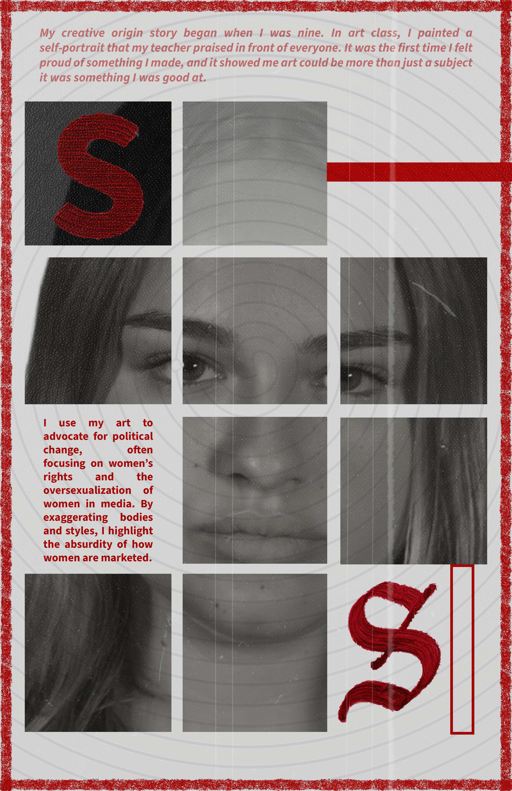

Good Design Magazine
Good Design Magazine is a visual editorial project exploring what good design means to me through typography, portrait imagery, composition, and magazine-inspired storytelling. I used this project to create something expressive and bold while experimenting with layout, hierarchy, and visual identity in a more conceptual way.

An editorial project exploring my view of good design.
For this project, I created a magazine-style visual piece centered around my own definition of good design. I focused on how typography, photography, texture, and layout can work together to communicate attitude, message, and identity. Instead of approaching the project like a traditional layout exercise, I treated it as something more expressive and visual, where the editorial style itself became part of the meaning.
What I Did
I developed the visual concept, organized the editorial layout, selected the image-based direction, and designed the final page with a focus on hierarchy, contrast, and strong composition. I used the magazine format to explore how design can feel both intentional and emotionally expressive.
Focus Areas
- Editorial layout and visual hierarchy
- Typography and composition
- Image-led storytelling
- Bold, fashion-inspired presentation
- Using design to communicate personality and perspective
Building the project visually and conceptually.
I approached this project as both a design exercise and a personal interpretation of what makes something feel well designed. I focused on developing a page that felt bold and polished while still being clear, balanced, and visually intentional.
Concept
I started by defining my theme: what good design means to me personally, and how that idea could be represented through an editorial format.
Layout
I explored arrangement, spacing, and hierarchy to create a page that felt structured but still expressive and visually bold.
Typography
I used typography as a major visual element, thinking carefully about scale, placement, contrast, and how the text interacted with the image.
Refinement
I refined the overall composition so the final result felt clean, intentional, and cohesive while still maintaining personality and impact.
What shapes the visual direction.
Editorial Composition
I wanted the page to feel like a real magazine spread, with a strong sense of structure and a layout that leads the viewer’s eye naturally.
Typography
Type plays a major role in the piece, not just as information, but as a visual element that adds mood, emphasis, and identity.
Portrait Imagery
The image selection helps give the project its fashion-inspired and expressive tone, making the piece feel bold and visually memorable.
Minimal Palette
A limited palette helps keep the page cohesive and lets the layout, image, and type carry the emotional weight of the design.
Balance + Contrast
I focused on balancing bold visual moments with enough negative space so the page would still feel intentional and easy to read.
Personal Perspective
More than just a layout assignment, this project reflects my own taste and perspective on what makes design feel strong, clear, and effective.
Featured visuals.

A magazine page that introduces the project’s personal voice through layered imagery, red accents, and expressive editorial composition.

This page uses fragmented portrait sections, strong contrast, and text placement to create a bold and fashion-inspired visual identity.

A more graphic and image-led page that continues the magazine’s experimental tone while keeping the project cohesive and visually memorable.
What I learned from this project.
This project allowed me to explore my own definition of good design while working in a more expressive editorial format. It pushed me to think about how visuals can communicate message, tone, and identity all at once. I had to consider how typography, image choice, and layout could work together to create a page that felt both intentional and visually compelling.
It also helped me develop my confidence in more conceptual and graphic work. Rather than only focusing on function, I thought carefully about mood, composition, and how design can reflect personal perspective. Overall, this project shows a more experimental and editorial side of my work, while still reflecting my interest in polished, visually memorable design.